4. 저수준 자원 관리와 파일 포인터 제어 (lseek)
위에서 나열한 운영체제들의 으리으리한 파일 시스템 계층을 파고들어 자유자재로 유린하기 위해, 프로그래머인 우리에겐 단 몇 줄의 C언어 코드면 충분합니다.

오프셋 커서와 파일 지정자(FD)
커널은 open()으로 생성된 모든 프로세스의 파일 지정자(File Descriptor) 테이블을 열어 놓고, 각각의 파일마다 “내가 이 파일 구조의 몇 바이트 offset 위치까지 도달해서 읽었는지” 추적하는 가상 커서(Offset Pointer)를 상시 유지 보수합니다.
이를 통해 개발자는 일반적인 글 읽기를 넘어섭니다.
lseek() 시스템 콜을 가동하여 파일의 끝단(SEEK_END)으로 순식간에 날아가 총 파일 바이트 크기 제원을 스캔/탐지하거나, 파일 배열 구조의 정중앙(SEEK_SET) 번지로 다이렉트 워프하여 그곳의 과거 파일 블록 데이터를 신규 데이터로 교묘히 덮어써(Overwrite) 조작해 버리는 치명적이고 예술적인 헥스(Hex) 저수준 버퍼 조작이 단 한 줄의 명령어로 즉각 통제 가능해집니다.
서브목차